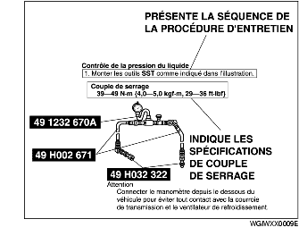
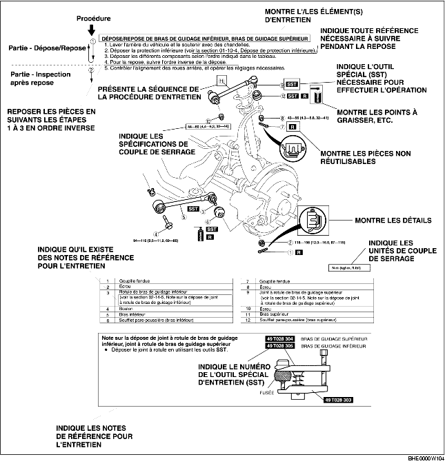
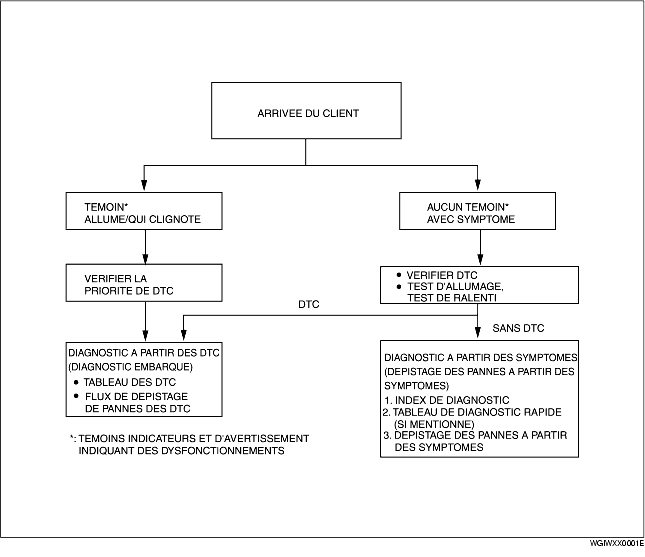
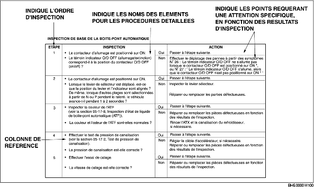
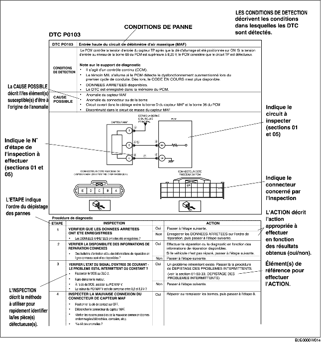
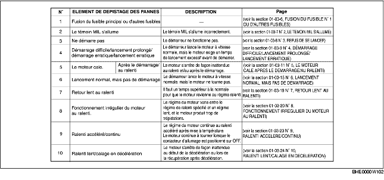
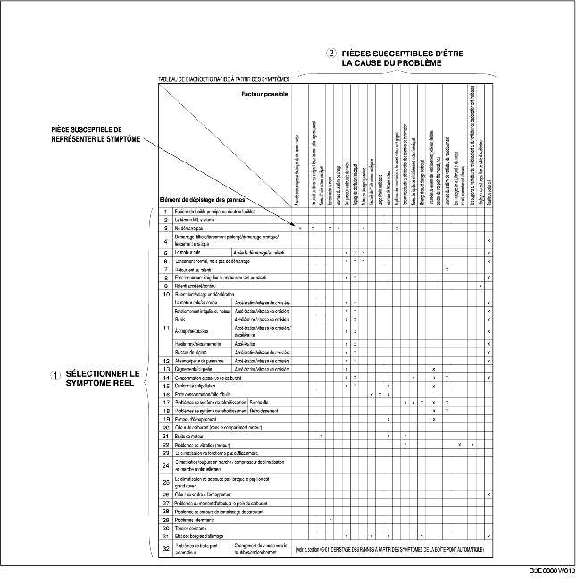
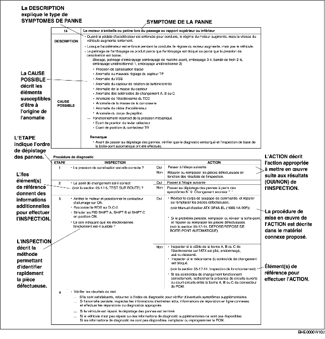

COMMENT UTILISER CE MANUEL
B3E000000001W01
Choix des sujets
• Le présent manuel contient les procédures de toutes les opérations d'entretien requises. Les procédures se répartissent dans les cinq opérations de base suivantes :
-
- Dépose/Repose
-
- Démontage/Remontage
-
- Remplacement
-
- Inspection
-
- Réglage
• Les opérations simples, pouvant s'effectuer facilement en regardant simplement le véhicule, ne sont pas reprises (p. ex. dépose/repose de pièces, mise sur cric, levage du véhicule, nettoyage des pièces, et examen visuel).
Procédure d'entretien
Inspection, réglage
-
• Les procédures d'inspection et de réglage sont divisées en étapes. Les points importants concernant l'emplacement et le contenu des procédures sont expliqués en détail et présentés dans les illustrations.

Procédure de réparation
1. La plupart des opérations de réparation débutent par une illustration générale. Elle identifie les composants, montre l'assemblage des pièces et décrit l'inspection visuelle des pièces. Cependant, les instructions écrites ne sont fournies que pour les procédures de dépose/repose devant s'effectuer méthodiquement .
2. Les pièces d'usure, les couples de serrage et les symboles d'huile, de graisse et de joint figurent dans l'illustration générale. Les symboles indiquant des pièces nécessitant l'emploi d'outils spéciaux ou équivalents y figurent également.
3. Les étapes de procédures sont numérotées, et la pièce constituant le point principal de cette procédure est indiquée dans l'illustration avec le numéro correspondant. Certaines procédures peuvent inclure des points importants ou des informations complémentaires. Reportez-vous à ces informations lors de l'entretien de la pièce concernée.

Symboles
• Huit symboles représentent l'huile, la graisse, les liquides, le joint et l'utilisation d'outils spéciaux ou équivalents. Ces symboles montrent les points d'application ou l'utilisation de ces matériaux pendant l'entretien.
|
Symbole
|
Signification
|
Type
|
|

|
Appliquer de l'huile
|
Huile moteur ou huile de boîte neuve et appropriée
|
|

|
Appliquer du liquide de freins
|
Liquide de freins neuf et approprié
|
|

|
Appliquer du liquide pour boîte-pont/boîte automatique
|
Liquide pour boîte-pont/boîte automatique neuf et approprié
|
|

|
Appliquer de la graisse
|
Graisse appropriée
|
|
|
Appliquer du produit d'étanchéité
|
Produit d'étanchéité approprié
|
|
|
Appliquer de la vaseline
|
Vaseline appropriée
|
|
|
Remplacer la pièce
|
Joint torique, joint, etc.
|
|

|
Utiliser un outil spécial (SST), ou équivalent
|
Outils appropriés
|
Messages d'aide
• Vous rencontrerez plusieurs messages de Avertissements, Attention, Remarques (notes), Spécifications et Limites tolérées supérieures et inférieures dans ce manuel.
Avertissement
-
• Un message d'Avertissement indique une situation pouvant provoquer des blessures graves ou la mort, s'il est ignoré.
Attention
-
• Un message Attention indique une situation pouvant provoquer des dommages au véhicule ou aux pièces, si l'indication est ignorée.
Remarque
-
• Un message de Remarque apporte des informations supplémentaires, qui vous aident à accomplir une procédure donnée.
Spécifications
-
• Les valeurs définies indiquent la plage acceptable lors des inspections ou des réglages.
Limites tolérées supérieures et inférieures
-
• Les valeurs définies indiquent les limites supérieures et inférieures ne pouvant être dépassées lors des inspections ou des réglages.
Procédure de dépistage des pannes
Organigramme de base de dépistage des pannes

Flux de dépistage des pannes DTC (diagnostic embarqué)
-
• Les codes d'anomalie de diagnostic (DTCs) sont d'importants points de suggestion pour la réparation des pannes difficiles à simuler. Effectuer une inspection de diagnostic des DTC spécifique afin de diagnostiquer rapidement et précisément la panne.
-
• La fonction de diagnostic embarqué est utilisée pendant l'inspection. Lorsqu'un DTC s'affiche et spécifie la cause d'une anomalie, poursuivre l'inspection de diagnostic conformément aux indications de la fonction de diagnostic embarqué.
Index des diagnostics
-
• L'index des diagnostics énumère la liste des symptômes de pannes spécifiques. Sélectionner les symptômes proches ou les plus proches de la panne réelle.
Tableau de diagnostic rapide (si mentionné)
-
• Le tableau de diagnostic rapide énumère les procédures d'inspection et de diagnostic à effectuer de manière spécifique en fonction de la cause de la panne.
Dépistage des pannes à partir des symptômes
-
• Le dépistage des pannes à partir des symptômes détermine rapidement l'emplacement d'une panne en fonction du type de symptôme.
Procédures d'utilisation
Utilisation de l'inspection de base (section 05)
-
• Effectuer la procédure d'inspection de base avant le dépistage des pannes à partir des symptômes.
-
• Procéder à toutes les étapes dans l'ordre indiqué.
-
• La colonne de référence indique l'emplacement de la procédure détaillée pour chaque inspection de base.
-
• Bien que les inspections et les réglages soient effectués conformément aux procédures indiquées dans la colonne de référence, si la cause de la panne est identifiée au cours de l'inspection de base, poursuivre les procédures de la manière indiquée dans la colonne Action.

Utilisation de l'organigramme de dépistage des pannes DTC
-
• L'organigramme de dépistage des pannes DTC présente les procédures de diagnostic, les méthodes d'inspection et l'action appropriée pour chaque DTC.

Utilisation de l'index de diagnostic
-
• Les symptômes des pannes sont énumérés dans l'index des diagnostics du dépistage des pannes à partir des symptômes.
-
• Les symptômes exacts des pannes peuvent être sélectionnés en suivant l'index.

Utilisation du tableau de diagnostic rapide
-
• Le tableau détaille les relations entre le symptôme et la cause d'une panne.
-
• Le tableau permet d'identifier rapidement les relations entre le symptôme et la cause d'une panne, et de localiser l'origine commune des pannes lorsque des symptômes multiples se présentent. Il permet également d'identifier la zone d'origine commune de symptômes de de pannes multiples.
-
• L'inspection par diagnostic appropriée, relative à la cause de la panne telle qu'elle est spécifiée par les symptômes, peut être sélectionnée en consultant la colonne d'inspection par diagnostic du tableau.

Utilisation du dépistage des pannes à partir des symptômes
-
• Le dépistage des pannes à partir des symptômes indique les procédures de diagnostic, les méthodes d'inspection et la démarche correcte à suivre pour chaque symptôme de panne.
